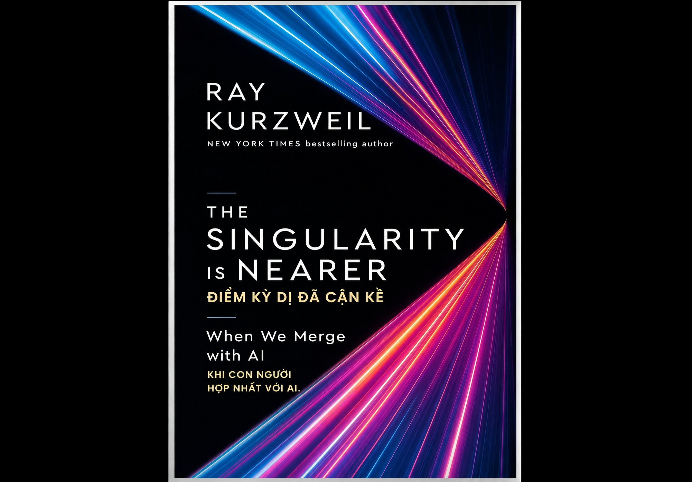

Điểm Kỳ Dị Đã Cận Kề - Khi Con Người Hợp Nhất Với AI
Ray Kurzweil

Đây là cuốn sách mới nhất của Ray Kurzweil, trong đó, ông cập nhật các dự đoán dựa trên sự phát triển của AI, sinh học và điện toán trong gần 20 năm qua. Nối tiếp cuốn The Singularity Is Near (2005).
Con người đang tiến rất nhanh đến thời điểm AI trở nên thông minh hơn con người, và cuối cùng con người sẽ hợp nhất với AI thay vì bị AI thay thế.
Chương 1. Quy luật tăng trưởng theo cấp số nhân
Kurzweil cho rằng hầu hết mọi người đều suy nghĩ tuyến tính:
• Năm sau sẽ tốt hơn năm nay một chút.
• Máy tính sẽ nhanh hơn một chút.
Nhưng công nghệ phát triển theo hàm mũ (exponential growth).
Ví dụ:
• CPU
• GPU
• Internet
• Dung lượng lưu trữ
• AI
đều tăng theo cấp số nhân.
Con người rất khó trực giác được điều này.
Chương 2. AI sẽ đạt trí thông minh cấp con người
LLM chỉ là bước đầu.
Sau GPT, AI sẽ:
• nhìn
• nghe
• suy luận
• lập kế hoạch
• tự học
Ông dự đoán khoảng cuối thập niên 2020:
AI sẽ đạt trình độ của con người trên hầu hết lĩnh vực trí tuệ.
Đây gọi là:
AGI (Artificial General Intelligence).
Chương 3. AI sẽ không dừng lại ở AGI
Sau khi vượt con người, AI sẽ tiếp tục tự cải tiến.
Lúc đó:
• AI thiết kế AI.
• Mỗi thế hệ AI lại thông minh hơn thế hệ trước.
• Chu kỳ nâng cấp ngày càng ngắn.
• Đó là nguyên nhân dẫn tới: The Singularity
Chương 4. Singularity là gì?
Là thời điểm trí tuệ nhân tạo phát triển nhanh đến mức con người không còn dự đoán được tương lai sau đó.
Giống như:
Một con khỉ không thể hiểu Internet.
Con người cũng không thể hình dung thế giới sau Singularity.
Chương 5. Con người sẽ hợp nhất với AI
Đây là phần quan trọng nhất.
Ông không tin AI sẽ tiêu diệt loài người.
Thay vào đó:
Con người sẽ dùng AI để mở rộng chính bộ não mình.
Ví dụ:
• kính AR
• AI assistant
• chip não
• Neuralink
• điện toán đám mây
Dần dần:
Trí nhớ -> khả năng suy luận ->
↓
sáng tạo -> không còn giới hạn trong bộ não sinh học.
Chương 6. Não người có thể kết nối Cloud
Trong tương lai,
não sẽ kết nối trực tiếp tới cloud.
Giống như hôm nay điện thoại kết nối Internet.
Ví dụ:
Một người nhớ được:
• toàn bộ Wikipedia
• toàn bộ sách
• hàng triệu video
không phải vì não lớn hơn,
mà vì truy cập cloud gần như tức thời.
Chương 7. Y học sẽ thay đổi hoàn toàn
AI kết hợp với:
• gene
• protein
• nano robot
sẽ giúp:
• chữa ung thư
• kéo dài tuổi thọ
• sửa lỗi DNA
• tái tạo mô
Kurzweil tin rằng tuổi thọ con người sẽ tăng mạnh trong vài thập kỷ tới.
Chương 8. Nano robot trong cơ thể
Một ý tưởng nổi tiếng của Kurzweil.
Ông dự đoán:
Hàng tỷ nano robot sẽ lưu thông trong máu.
Chúng có thể:
• tiêu diệt virus
• sửa tế bào
• mang thuốc đúng vị trí
• hỗ trợ miễn dịch
• tăng cường nhận thức
Hiện nay công nghệ này mới ở giai đoạn nghiên cứu ban đầu và còn rất xa mới đạt quy mô như ông mô tả.
Chương 9. Thực tế ảo sẽ giống đời thật
Kurzweil dự đoán:
VR và AR sẽ phát triển đến mức:
Bạn gần như không phân biệt được:
• thật
• ảo
Mọi giác quan đều được mô phỏng.
Chương 10. Năng lượng sẽ rất rẻ
Nhờ:
• AI
• pin
• điện mặt trời
• tự động hóa
chi phí sản xuất sẽ giảm mạnh.
Ông tin nền kinh tế sẽ tiến tới trạng thái "thừa" nhiều loại hàng hóa và dịch vụ, dù quá trình chuyển đổi sẽ không đồng đều giữa các quốc gia và ngành nghề.
Chương 11. Công việc sẽ thay đổi
AI sẽ thay thế rất nhiều nghề:
• lập trình
• luật
• kế toán
• thiết kế
• dịch thuật
Nhưng Kurzweil không cho rằng việc làm sẽ biến mất hoàn toàn.
Ông cho rằng con người sẽ chuyển sang những công việc mới chưa từng tồn tại, tương tự các cuộc cách mạng công nghiệp trước đây. Tuy nhiên, đây là một dự báo gây tranh luận vì tốc độ thay đổi của AI có thể nhanh hơn các giai đoạn lịch sử trước.
Chương 12. Cuộc sống sẽ thay đổi căn bản
Khi:
AI + Robot + Sinh học + Nano + Cloud + Gene
kết hợp lại,
thế giới sẽ khác hoàn toàn hiện nay.
Theo Kurzweil,
Singularity có thể diễn ra vào khoảng năm 2045.
Những dự đoán nổi bật
| Dự đoán | Mốc thời gian (ước tính của Kurzweil) |
|---|---|
| AI đạt trình độ con người (AGI) | Cuối thập niên 2020 |
| AI vượt con người trên hầu hết lĩnh vực | Đầu–giữa thập niên 2030 |
| Não kết nối trực tiếp với cloud | Thập niên 2030 |
| Nano robot y học phổ biến | Thập niên 2030–2040 |
| Singularity | Khoảng 2045 |
Điểm mạnh của cuốn sách
• Kết nối AI, sinh học, nano và khoa học thần kinh thành một bức tranh thống nhất.
• Giải thích dễ hiểu về tăng trưởng theo cấp số nhân, một khái niệm quan trọng để hiểu sự phát triển công nghệ.
• Cập nhật các tiến bộ AI đến khoảng năm 2024, thay vì chỉ dựa trên các dự đoán từ năm 2005.
• Truyền cảm hứng và đưa ra nhiều câu hỏi lớn về tương lai của loài người.
Hạn chế và tranh luận
• Nhiều mốc thời gian (đặc biệt AGI cuối thập niên 2020 và Singularity năm 2045) là dự báo, không phải đồng thuận khoa học.
• Cuốn sách thiên về góc nhìn lạc quan; các rủi ro như mất kiểm soát AI, bất bình đẳng, an ninh và quản trị được đề cập nhưng không phải trọng tâm.
• Một số công nghệ như nano robot trong máu hay kết nối não–đám mây ở quy mô lớn vẫn còn nhiều thách thức khoa học và kỹ thuật.
Nếu chỉ nhớ 5 ý quan trọng nhất của cuốn sách, đó là:
1. Công nghệ phát triển theo cấp số nhân, không phải tuyến tính.
2. AI nhiều khả năng sẽ đạt và vượt trí thông minh con người trong tương lai.
3. Con người sẽ ngày càng mở rộng năng lực bằng AI, thay vì chỉ cạnh tranh với AI.
4. Sinh học, AI, nano và điện toán sẽ hội tụ, tạo ra những thay đổi sâu rộng trong y học và xã hội.
5. "Điểm kỳ dị" là giả thuyết về thời điểm tốc độ tiến bộ công nghệ vượt quá khả năng dự đoán của con người, và Kurzweil cho rằng điều đó có thể xảy ra vào khoảng 2045.